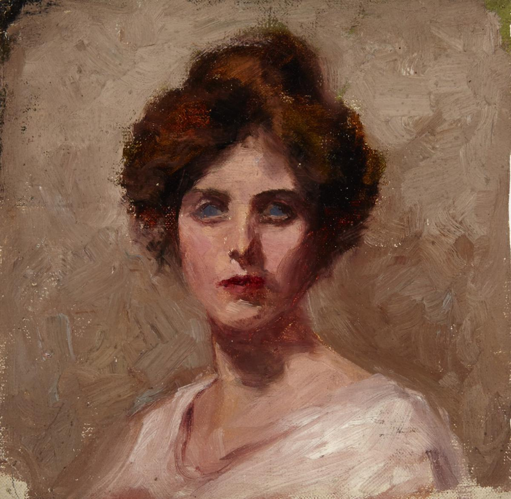
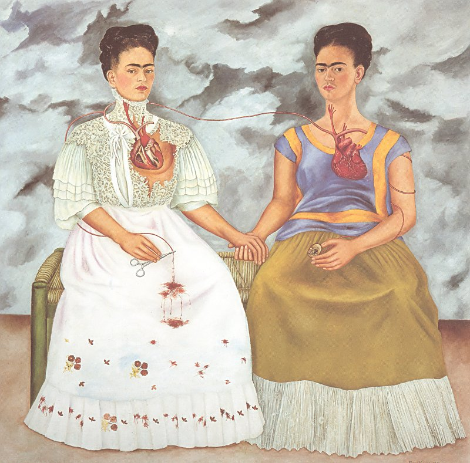

伯莎 Bertha May Ingle – 自画像 Self-Portrait
文章目录
 图1. Bertha May Ingle, Self-Portrait, ~1902, oil on canvas, Private collection
今天是国际妇女节，不由想写一位女性画家。 国内外的女艺术家耳熟能详的挺多，法国维杰·勒布伦 Elisabeth-Louise Vigée-Lebrun（图2）、墨西哥的弗里达·卡罗 Frida Kahlo（图3）和她的好友美国乔治亚·欧姬芙 Georgia O’Keeffe （图4），中国的女画家影响力最大的当属潘玉良（图5），对了，还有仍在世的行为女艺术家日本的草间弥生 Yayoi Kusama（图6）。
这些闪着光的女艺术家，每一位的人生经历比作品更具艺术性；而现在从我躁动冷寂的内心中却更偏爱在平静的生活中创作的艺术家，像伯莎一样静美的女子。
 图2. Elisabeth-Louise Vigée-Lebrun, Self-Portrait in a Straw Hat, ~1782, Oil on Canvas, 97.8 x 70.5cm, National Gallery, London
图2. Elisabeth-Louise Vigée-Lebrun, Self-Portrait in a Straw Hat, ~1782, Oil on Canvas, 97.8 x 70.5cm, National Gallery, London
 图3. Frida Kahlo, The Two Fridas, 1939, Oil on Canvas, Museo de Arte Moderno, Mexico City.
 图4. Georgia O’Keeffe and one of her skull paintings, 1931. Photograph: Everett/CSU Archives/Alamy Stock Photo
图4. Georgia O’Keeffe and one of her skull paintings, 1931. Photograph: Everett/CSU Archives/Alamy Stock Photo
 图5. Pan Yu Lin, Self-Portrait, 1945, 73 x 59 cm, Anhui Museum, Hefei
图5. Pan Yu Lin, Self-Portrait, 1945, 73 x 59 cm, Anhui Museum, Hefei
 图6. Yayoi Kusama and Self-Portrait, 2009, Acrylic on canvas, 194 x 194 cm
图6. Yayoi Kusama and Self-Portrait, 2009, Acrylic on canvas, 194 x 194 cm
伯莎出生在加拿大安大略省，可能在枫叶国之外，大家对她都不甚熟悉，甚至没有官方的中译名。 伯莎小时候身体差，父母为了保护她，让她更多时间在屋里休养。在这样的安静时光里，她学会与自己相处，画画、看书。 童年的乡村生活让她享受平静时光的静谧，融进她的个性中：不张扬、宁静的暖。
伯莎的日记里记着一段段童年回忆，其中有一段是她遇见一只小熊：
One of the very first, vivid as yesterday, is of being outdoors in the summer twilight, the air cool and moist against my face. The cows had been milked and were standing chewing peacefully. The sun was set, but the western sky was still aglow. I stood near my father, who was standing very tall and still. Suddenly I sensed excitement, though no one moved or spoke. And then I too saw it, a great clumsy looking form, rearing up and climbing high on the snake fence. It sat there black against the orange and red of the sky, its nose lifted and scenting to right and left. Then it climbed down again and leisurely sauntered off toward the great swamp near by. It was a bear. I was about four and that was seventy-five years ago. 宛如昨日，在一个夏日黄昏，空气渐冷微润抚着我的脸，产完奶的牛静静嚼着青草，悄悄落山的太阳在西方天空下留下了微微泛光的红和黄。 爸爸的身影被落日拉得修长而高大，我站在他旁边，一起看落日西沉。忽然出现一个小熊，它笨拙地爬到栅栏上，黑色的小熊映在橙色和红色的天空里，鼻子左嗅嗅右嗅嗅，似乎在吮吸着空气中的甜，然后它爬下来悠闲地走向附近的大沼泽地。那是七十五年前，小小的我只有四岁，而记忆中的小熊依然活泼可爱。
她的童年是彩色的，再过四十年，我的回忆是什么颜色的？
伯莎油画的笔触与印象派很接近，在自画像（图1）中表现非常明显。 她还有几幅自画像（图7），从少女到中年再到晚年，画如其人：温柔优雅，蕙质兰心！
图7. Bertha May Ingle, Self-Portrai in Different Times, Private Collection
她爱周围的小朋友，为他们创作出很多小画，有些是亲戚家的小孩，有些是村里邻居的小孩，孩子们的笑是真诚的，伯莎的画笔也是真诚的。 她爱劳动的男人女人，画平常的少女或老妇人劳动的美，也会为友人画肖像画，都是放松的神情，因为伯莎首先是他们的朋友。 她也爱她的生活，画海画海边嬉戏的男孩和女孩，画天画天边消失的夕阳落日，这些人这些景就如同今天我见到一般，简单的才是更能引起共鸣。
伯莎，不是一位不知名的女画家的名字，她是无数位在历史长河中孜孜不倦、不图名利地追求自由艺术的美好名字。 仿佛银河夜空中最微小的一颗星，无所谓你肉眼或望远镜里有没有看见，她，闪着不灭的光。
伯莎的一生，平静平凡，伯莎的画，简单宁静，有真实就够，无需过多的装饰！
下午公司放假，虽然我的工作还差很多没有完成，但心情压抑得只想赶紧逃离。 在图书室待了一小时终于缓过来，回酒店路上恍恍惚惚，一直在拷问自己： 你想要怎样的生活？你的欲望是什么？ 我想我需要时间，去爱，去发呆，去画画，去看闲书，去喝咖啡，去写写字，去浪费，去挥霍。
参考：
- 潘玉良官网，http://www.panyulin.org/
- 伯莎官网，https://www.berthamayingle.ca/
- 伯莎侄子为她写的博客，http://berthamayingle.blogspot.com/